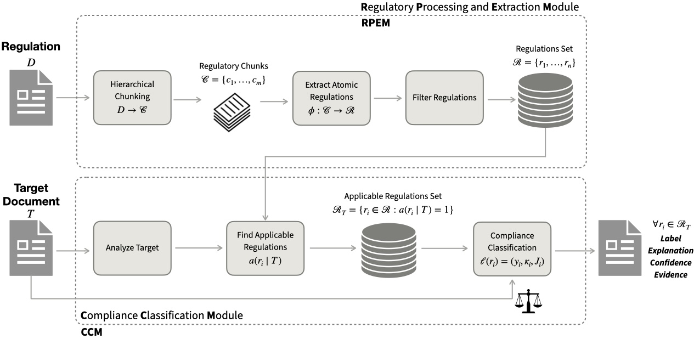

★ Fully open-source · regulation-agnostic · runs locally
ARCCS: An Automated Regulatory Compliance Checking System
An end-to-end, agentic Legal NLP system that turns raw regulatory text into atomic, traceable requirements and checks any target document against them — with retrieved evidence, calibrated confidence, and human-interpretable justification for every decision.
1Instituto de Telecomunicações · 2Instituto de Telecomunicações / IST, Universidade de Lisboa · 3INESC-ID / IST, Universidade de Lisboa

Figure 1. The ARCCS pipeline. The Regulatory Processing & Extraction Module (RPEM) turns a raw regulation into atomic, traceable requirements; the Compliance Classification Module (CCM) checks a target document against each one, returning a label, a confidence score, and cited evidence.